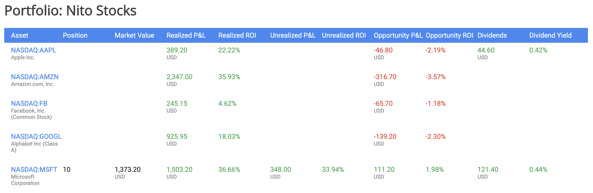
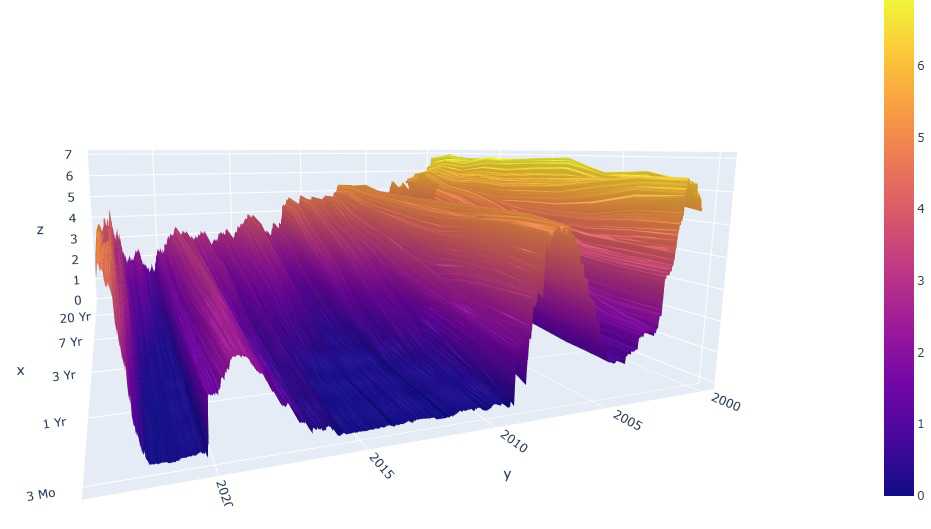

I currently serve as the Assistant Vice President and Manager of Investments and Operations at Crescendo Asset Management LLC. I'm a proud CAIA member, backed by a Master's degree in Finance from the University of Miami and a Bachelor's in Finance from Ohio University, both with top honors.
In addition, I've earned specializations in Deep Learning, Machine Learning, and Mathematics for Machine Learning. This cross-disciplinary proficiency enables me to create innovative investment strategies, blending finance with cutting-edge technology.
With fluency in Chinese and English, plus limited proficiency in Spanish and Japanese, I can effectively communicate across diverse professional landscapes. My goal is to continually harness my financial and technological expertise to foster growth and innovation in asset management.
This Python-based project is designed to track the performance of various investments over time. It can be developed to manage stocks, bonds, mutual funds, and other types of investments. Integrating it with a financial API can provide real-time or historical market data. Storing and processing data from these investments could be handled using a database like SQLite, and libraries such as Matplotlib or Seaborn can be used to generate graphs and charts for data visualization. This project can serve as an efficient tool to understand how financial markets work and how to analyze data in Python.
This Python-based project involves creating a 3D contour map of the U.S. Treasury Yield Curve. Using data from the U.S. Department of the Treasury, this application visualizes the yield curve across different maturities and dates. The project could utilize libraries like NumPy for numerical computations, pandas for data manipulation, and Matplotlib or Plotly for the creation of 3D visualizations. This project serves as a way to understand financial concepts while practicing data manipulation and visualization in Python.
If you'd like to contact me, you can reach me at wangzongwang94@gmail.com or 614-815-1990.